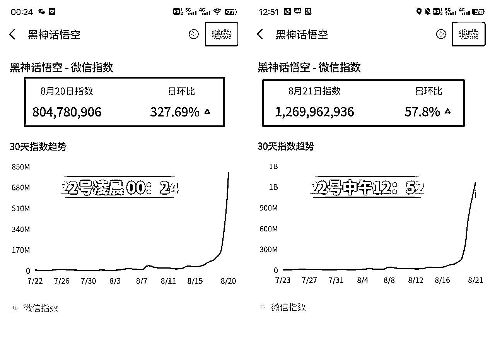
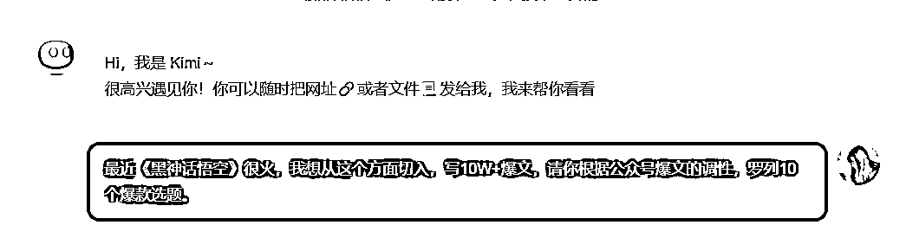
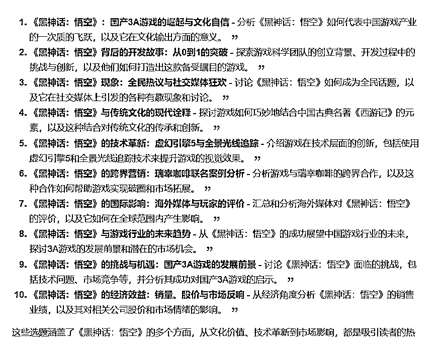
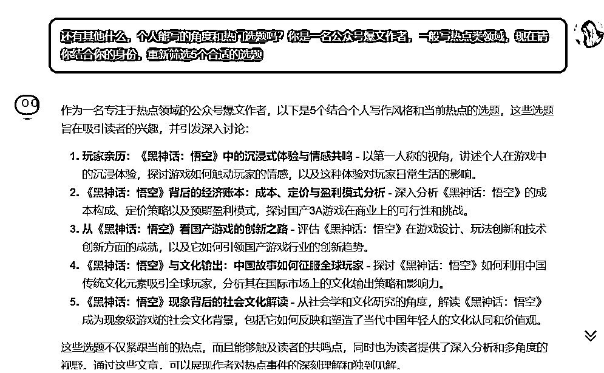
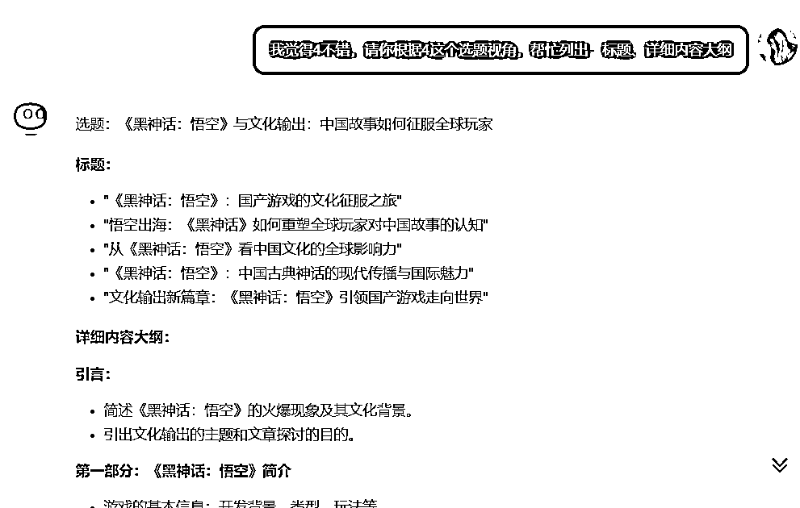
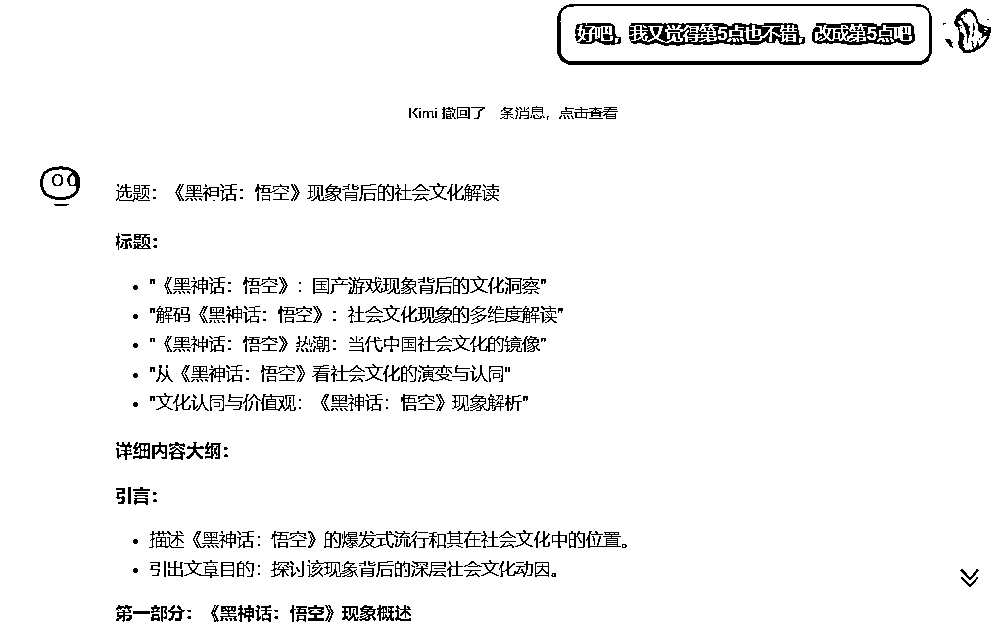
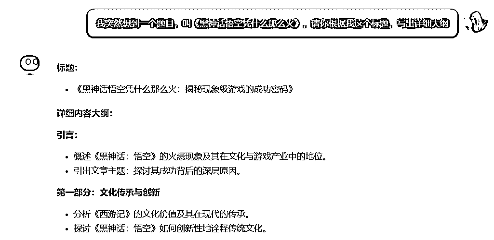
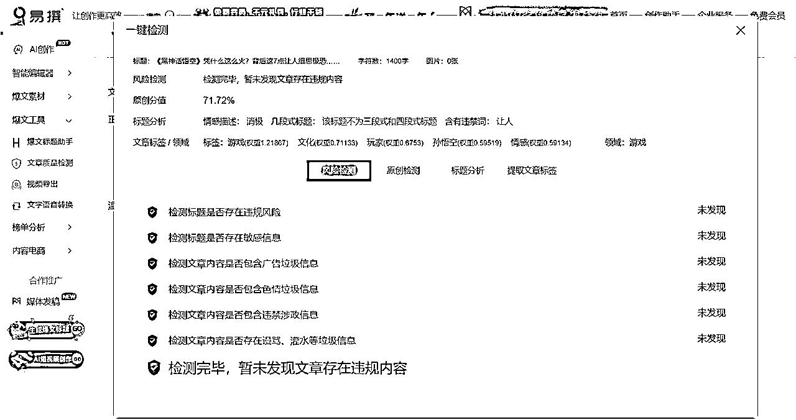

来源：https://die28mmde0k.feishu.cn/docx/NbU0dzGs2oUrlBxDSDMc5a4TnCh
嗨，你好，我是安七。应届毕业生，1年双百万，主攻ai+写作。
这两天《黑神话：悟空》爆火，连大家长都开始推。很多做公众号爆文的伙伴，或多或少都捕捉到这个明显的【异常值】。
分享一组数据，微信指数，看看《黑神话：悟空》的数据飙升到底有多猛：

有很多写热点类或做游戏类账号的伙伴，想抓住这波热度，但不知道从何入手。
我把自己代入全新小白，用Kimi测试了下，产出结果还不错，和大家分享我的调教思路和详细对话，希望对各位圈友有帮助。
如果觉得有帮助，看完可以点个赞/评论留言，正反馈比较多的话，以后多分享这方面的内容。
下面是正文：
打开Kimi，输入这段文字：
最近《黑神话悟空》很火，我想从这个方面切入，写10W+爆文，请你根据公众号爆文的调性，罗列10个爆款选题。

下面是我的Kimi生成的10个选题：

如果觉得不满意，可以跟它说你的要求，继续生成。
比如我就觉得什么这10个，好像都一般，做为新手小白来写的话，还是有难度，所以我跟它说：
还有其他什么，个人能写的角度和热门选题吗？你是一名公众号爆文作者，一般写热点类领域，现在请你结合你的身份，重新筛选5个合适的选题
给了它具体的身份设定，不再天马行空般发散

从上面的选题中，选一个自己喜欢的，接下来就是让它帮忙生成大纲了：

下面是它的回复：
选题：《黑神话：悟空》与文化输出：中国故事如何征服全球玩家
标题：
"《黑神话：悟空》：国产游戏的文化征服之旅"
"悟空出海：《黑神话》如何重塑全球玩家对中国故事的认知"
"从《黑神话：悟空》看中国文化的全球影响力"
"《黑神话：悟空》：中国古典神话的现代传播与国际魅力"
"文化输出新篇章：《黑神话：悟空》引领国产游戏走向世界"
详细内容大纲：
引言：
简述《黑神话：悟空》的火爆现象及其文化背景。
引出文化输出的主题和文章探讨的目的。
第一部分：《黑神话：悟空》简介
游戏的基本信息：开发背景、类型、玩法等。
《西游记》的文化意义及其在现代的传承。
第二部分：文化元素的现代诠释
游戏中的中国传统文化元素：角色设计、故事情节、音乐、美术风格等。
现代游戏技术与中国传统文化的结合方式。
第三部分：全球玩家的接受与反馈
国际市场对《黑神话：悟空》的评价和反响。
海外玩家如何通过游戏了解和接受中国文化。
第四部分：文化输出的策略与实践
游戏作为文化产品输出的策略分析。
《黑神话：悟空》在不同文化市场中的定位和推广方式。
第五部分：《黑神话：悟空》与国产游戏的国际化道路
国产游戏在国际市场上的现状和挑战。
《黑神话：悟空》对国产游戏国际化的启示和影响。
第六部分：社会文化影响分析
游戏对提升中国文化软实力的作用。
《黑神话：悟空》在国内外引发的文化讨论和思考。
第七部分：未来展望与挑战
国产游戏在全球市场的发展机遇。
面临的挑战：文化差异、市场接受度、持续创新等。
结语：
总结《黑神话：悟空》在文化输出方面的成就和意义。
对未来国产游戏在全球文化传播中的角色和潜力的展望。
附录：
相关数据和图表，如游戏销量、玩家分布、媒体评分等。
采访或引用海外玩家和行业专家的观点。
通过这个详细内容大纲，可以系统地展开对《黑神话：悟空》在文化输出方面的深入分析，为读者提供全面、多角度的视野。
后来我又“变卦”了，让它写第5个选题。
它也能对答如流：

当然，如果你觉得它给的都不满意，也可以给个标题，让它帮忙生成大纲：

确定好选题、标题（到时候可以再改）、大纲后，可以给它身份设定，让它开始写文章了。
觉得大纲没问题后，可以让它直接根据大纲、要求生成文章。
下面是我的口令：
OK，请你根据这个大纲，写一篇2000字左右的文章。下面是我你的角色设定和文章要求：
假设你是一个擅长捕捉热点且有超强热点输出能力的公众号作者，擅长用独特的视角、犀利但不失温度的语言写出通俗易懂的文章，请你以“《黑神话悟空》凭什么这么火？背后这7点让人细思极恐……”为标题，写一篇2000字左右的文章。
要求：
1.用语通俗易懂、接地气，不要高深莫测。
2.文章内容表达正确，要是最新的。涉及具体数据的时候，要权威可信，如果不清楚，可以联网搜索。
3.写作风格比较客观中肯，温和但不失犀利
4.口语化表达
5.通俗易懂的同时要言之有物，不要口水话、讲一堆没用的，要有你的观点。
它的初版：
《黑神话悟空》凭什么这么火？背后这7点让人细思极恐……
最近，如果你还没听说过《黑神话：悟空》，那你可能真的住在了花果山。这款游戏一上线，就火得一塌糊涂，让无数玩家和吃瓜群众都坐不住了。那么，《黑神话：悟空》究竟凭什么这么火？今天，咱们就来聊聊背后让人细思极恐的7点原因。
1. 文化自信的觉醒
《黑神话：悟空》把咱们老祖宗的《西游记》搬上了游戏屏幕，这不仅是对传统文化的一次现代致敬，更是文化自信的觉醒。游戏里的孙悟空，不再是简单的猴王形象，而是带着深深的文化烙印，让玩家在打怪升级的同时，也能感受到中华文化的魅力。
2. 技术实力的展示
这游戏的画面，简直是视觉的盛宴！虚幻引擎5的加持，让每一个场景都细腻到让人惊叹。从毛发到光影，从山水到建筑，每一处细节都透露出开发者的匠心独运和技术实力。
3. 情感叙事的魔力
《黑神话：悟空》不仅仅是打打杀杀，它还有着扣人心弦的故事线。游戏中的角色不再是冷冰冰的NPC，而是有着自己情感和故事的人物。这种深度的情感叙事，让玩家在游戏的世界里找到了共鸣。
4. 精准营销的智慧
《黑神话：悟空》的火爆，离不开其背后的营销智慧。从预告片的发布，到各种跨界合作，再到社交媒体上的口碑传播，每一步都走得恰到好处，让游戏的热度持续升温。
5. 国际市场的突破
这款游戏不仅在国内火，在国外也是好评如潮。《黑神话：悟空》成功地跨出了国门，让世界看到了中国游戏的力量。这种国际市场的突破，不仅仅是商业上的成功，更是文化输出的一次胜利。
6. 社会文化的反映
《黑神话：悟空》的火爆，也反映出了当下社会文化的一些趋势。它不仅仅是一款游戏，更是一面镜子，映照出了当代年轻人对于文化认同、自我表达的渴望。
7. 持续创新的挑战
虽然《黑神话：悟空》取得了巨大的成功，但游戏团队面临的挑战依然不小。如何在保持创新的同时，满足玩家日益增长的需求，这是《黑神话：悟空》需要持续思考的问题。
结语：
《黑神话：悟空》的火爆，不是偶然，而是必然。它集合了文化自信、技术实力、情感叙事、精准营销、国际突破、社会文化反映和持续创新的多重因素。这款游戏的成功，不仅仅是中国游戏产业的骄傲，更是中国文化自信的体现。在未来，我们有理由相信，会有更多像《黑神话：悟空》这样的作品，让世界看到中国的故事，听到中国的声音。
(注：文章中的数据和信息来源于互联网搜索，以确保内容的准确性和时效性。)
不满意，继续调教：
可以，就是有点内容太少了，每段都再添加200字左右进去吧，要由浅入深，让人觉得看完很有收获，也认同你说的，是那么回事。
它的2版：
《黑神话悟空》凭什么这么火？背后这7点让人细思极恐……
在游戏的世界里，有一种火爆，叫《黑神话：悟空》。这款国产3A大作，不仅点燃了国内玩家的热情，更是在国际上掀起了一股“西游热”。今天，我们就来深挖一下，《黑神话：悟空》究竟凭什么这么火？
1. 文化自信的觉醒
《黑神话：悟空》的成功，首先得益于它深深植根于中国文化的土壤。它不仅仅是对《西游记》的一次现代演绎，更是对中华文化自信的一次觉醒。游戏中的每一个细节，从孙悟空的金箍棒到七十二变的神通，都在向世界宣告：我们的文化，有深度，有力量，有魅力。这种文化自信，让玩家在享受游戏的同时，也能感受到一种来自血脉的自豪。
2. 技术实力的展示
在这个看脸的时代，游戏也不例外。《黑神话：悟空》以其电影级的画质和流畅的战斗体验，彻底颠覆了玩家对国产游戏的认知。虚幻引擎5的运用，让游戏中的每一个场景都栩栩如生，仿佛置身于一个真实的神话世界。这种技术实力的展示，不仅仅是视觉上的震撼，更是对国产游戏制作水平的一次有力证明。
3. 情感叙事的魔力
好的故事，总能打动人心。《黑神话：悟空》在情感叙事上下足了功夫。游戏中的孙悟空，不再是单一的英雄形象，而是一个有着丰富情感和内心世界的角色。他的挣扎、成长、牺牲，都深深触动了玩家的心。这种情感叙事的魔力，让玩家在游戏的每一个章节中，都能找到共鸣，感受到故事的力量。
4. 精准营销的智慧
酒香也怕巷子深。《黑神话：悟空》的火爆，离不开其背后的精准营销。从预告片的震撼发布，到与各大品牌的跨界合作，再到社交媒体上的口碑传播，每一步都显得恰到好处。这种营销智慧，不仅让游戏迅速走红，更让《黑神话：悟空》成为了一种文化现象，引发了广泛的社会讨论。
5. 国际市场的突破
在全球化的今天，一款游戏要想成功，就必须走出国门。《黑神话：悟空》做到了。它不仅在国内获得了极高的评价，在国际上也赢得了广泛的认可。这款游戏的成功，不仅仅是商业上的成功，更是中国文化在国际上的一次成功输出。它让世界看到了中国游戏的实力，也让世界感受到了中国文化的魅力。
6. 社会文化的反映
《黑神话：悟空》的火爆，也反映出了当下社会文化的一些趋势。在快节奏的生活中，人们越来越渴望找到一种情感的寄托，一种文化的认同。《黑神话：悟空》以其深厚的文化内涵和强烈的情感表达，满足了这种需求。它不仅仅是一款游戏，更是一面镜子，映照出了当代年轻人对于文化认同、自我表达的渴望。
7. 持续创新的挑战
成功的背后，总有不断的挑战。《黑神话：悟空》虽然取得了巨大的成功，但游戏团队面临的挑战依然不小。如何在保持创新的同时，满足玩家日益增长的需求，如何在激烈的市场竞争中保持领先地位，这些都是《黑神话：悟空》需要持续思考的问题。只有不断超越自我，才能在游戏的海洋中乘风破浪。
结语：
《黑神话：悟空》的火爆，不是偶然，而是必然。它集合了文化自信、技术实力、情感叙事、精准营销、国际突破、社会文化反映和持续创新的多重因素。这款游戏的成功，不仅仅是中国游戏产业的骄傲，更是中国文化自信的体现。在未来，我们有理由相信，会有更多像《黑神话：悟空》这样的作品，让世界看到中国的故事，听到中国的声音。这不仅仅是游戏的胜利，更是文化的胜利，是创新的胜利。
(注：文章中的数据和信息来源于互联网搜索，以确保内容的准确性和时效性。)
第2版，觉得还不错，比第一版好很多。
用易撰检测了原创度和风险，也基本上没有什么风险，原创度过关：

后来我脑子里面又蹦出一个标题，同样的方式，让它根据我的标题生成大纲，根据大纲+口令生成内容，效果也不错：
（步骤都是一样的，就不展示了，直接上文章效果）
标题：无脑骂《黑神话：悟空》的人，真垃圾
最近，国产游戏圈出了个大新闻，《黑神话：悟空》横空出世，让无数玩家眼前一亮。可就在这股热潮中，偏偏有那么一些人，不分青红皂白，上来就是一通无脑喷。今天，我就要好好说道说道，这种无脑黑的行为，真是让人看不下去！
首先，让我们来聊聊《黑神话：悟空》。这款游戏，从一开始就备受瞩目，它的每一个预告片，都让玩家们热血沸腾。它不仅仅是一款游戏，它是国产游戏的骄傲，是中国文化的一次大胆展示。它的成功，是开发者们无数个日夜辛勤劳动的成果，是他们对品质的不懈追求。
可就在这样的背景下，有些人却开始了他们的表演。他们不关心游戏的质量，不关心开发者的努力，只管一味地喷。这些人，你们真的玩过游戏吗？你们真的了解《黑神话：悟空》背后的故事吗？无脑黑，除了显示你们的无知和狭隘，还有什么意义？
开发一款游戏，尤其是像《黑神话：悟空》这样的3A大作，其中的艰辛和挑战，是外人难以想象的。技术难题、资金压力、市场风险……每一个环节，都可能是致命的考验。但《黑神话：悟空》的团队，他们克服了这些困难，给我们带来了这样一款令人惊艳的作品。这样的努力，难道不值得我们尊重和鼓励吗？
有人说，支持《黑神话：悟空》，就是支持国产，就是爱国。这话不假。在全球化的今天，文化自信显得尤为重要。《黑神话：悟空》以中国古典名著为背景，展现了中国丰富的文化和神话故事。它让世界看到了中国游戏的力量，看到了中国文化的魅力。无脑黑它，不是在否定这款游戏，而是在否定我们的文化自信。
我不是说《黑神话：悟空》就是完美的，没有任何问题。当然，它还有改进的空间，还有提升的潜力。但关键在于，我们应该以怎样的态度来提出意见。理性的批评，建设性的意见，这是我们应当追求的。只有这样，我们的游戏才能不断进步，我们的文化才能不断传播。
无脑黑，不仅对《黑神话：悟空》的团队不公平，对广大期待这款游戏的玩家也不公平。它破坏了游戏社区的和谐氛围，影响了玩家的游戏体验。更重要的是，它可能会打击开发者的积极性，阻碍国产游戏的发展。
面对无脑黑，我们应该更加坚定地支持《黑神话：悟空》。我们要看到它的潜力，看到它为国产游戏开辟的新道路。我们要相信，有了我们的支持和鼓励，它会越来越好，国产游戏会越来越好。
最后，我要呼吁大家，让我们一起抵制无脑黑的行为。在评论区，在朋友圈，在每一个可以发声的地方，我们要为《黑神话：悟空》正名，为国产游戏正名。我们要让那些无脑黑的人知道，真正的玩家，是热爱游戏、支持创新、尊重文化的。
结语：
《黑神话：悟空》的火爆，是国产游戏的一次伟大胜利。无脑黑它的人，你们真的了解这款游戏吗？你们真的了解它背后的努力和汗水吗？无脑黑，不仅无助于游戏的发展，更是对我们自己文化的不尊重。让我们一起行动起来，用理性的声音，支持《黑神话：悟空》，支持国产游戏，支持我们的文化自信。因为我们知道，只有这样，我们的游戏才能走得更远，我们的文化才能更加辉煌。
(注：文章中的数据和信息来源于互联网搜索，以确保内容的准确性和时效性。)
当然，还是有比较明显的ai的地方，但是，比起人手写1-2小时输出1500字，Kimi这效率简直太燃了！
ai是工具，可以辅助我们产出文章，但不能全部指望它，利用好它，它就是一把利器。
像我们做ai+公众号爆文矩阵，ai写作工具还是很重要的，口令也非常重要。
我们团队伙伴写文，一般是用文心一言比较多，其次是Kimi。
但对话感和理解能力，还是Kimi更胜一筹。
国外版GPT、克劳德也不错，只是我不喜欢总翻墙，还是想支持下国产的。
如果是结合某个热点或趋势写文章，Kimi会更好一点。
大家以后捕捉到某个热点，也可以参考上面的流程：
打开Kimi——让它结合热点事件，给选题——定好选题后，定标题、大纲——结合大纲、口令成文——人工润色。
这个闭环就差不多完成了。
ai时代下，会用工具的人，一定比不会用的人活得更久。
OK，文章写到这里也差不多结束了，非常简单，大家也可以拿我这个先去试试，玩一玩。
这是ai公众号爆文系列的第5个系列，ai调教系列
其他4个系列：
【系列1：】
故事篇：我是如何链接贵人、找到AI公众号爆文方向的？
文章：
【系列2：】
战略篇：坦白局——公众号爆文还值得做吗？
文章（精华帖）：【坦白局】：毕业1年，通过公众号爆文项目赚到7位数，公众号爆文还值得做吗？
【系列3：】
数据篇：精华or水帖？用事实说话：04年大二助理，历时一年，从小白到平均3天一篇10w+爆文机……
文章：《精华or水帖？用事实说话：0...》
【系列4：】
领域推荐篇：24年8月，有什么还不错的小众领域？
文章：https://t.zsxq.com/p8XG3
还有什么想看的？欢迎评论区留言。
我是安七，我们下期见~